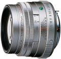

器材库 > 35mm画幅AF定焦镜头 > SMC FA 77/1.8 Limited

详细规格
镜头类型
中远摄/远摄镜头
发布日期
1999
焦距
77mm
最大光圈
f/1.8
最小光圈
f/22
视角（对角）
31.5
镜头结构
7片/6组
光圈叶片
9片
最近对焦距离
70cm
最大放大倍率
0.14倍
驱动马达
AF马达
滤镜口径
49mm
镜头卡口
Pentax AF
防抖
否
颜色
银白色
尺寸
64.00x48.00mm
重量
270g
cybertron2020-08-07 05:044.58 分
操作性 5.00耐用性 4.00性价比 4.00解像力 5.00色彩还原 5.00机械结构 4.50
匿名网友2020-02-26 22:434.75 分
操作性 4.50耐用性 5.00性价比 4.00解像力 5.00色彩还原 5.00机械结构 5.00
cyberlife2019-11-20 23:164.58 分
操作性 4.50耐用性 4.00性价比 4.00解像力 5.00色彩还原 5.00机械结构 5.00
Luft2016-11-04 13:114.67 分
操作性 4.50耐用性 5.00性价比 5.00解像力 4.00色彩还原 4.50机械结构 5.00
plover2016-10-28 10:314.75 分
操作性 5.00耐用性 5.00性价比 4.50解像力 4.50色彩还原 4.50机械结构 5.00
suximin2016-02-03 10:174.92 分
操作性 5.00耐用性 4.50性价比 5.00解像力 5.00色彩还原 5.00机械结构 5.00
oneberry2014-04-18 10:295 分
操作性 5.00耐用性 5.00性价比 5.00解像力 5.00色彩还原 5.00机械结构 5.00
qq1522013-06-18 01:204.92 分
操作性 5.00耐用性 5.00性价比 4.50解像力 5.00色彩还原 5.00机械结构 5.00
arondes2013-04-27 00:534.5 分
操作性 4.00耐用性 4.50性价比 4.50解像力 5.00色彩还原 5.00机械结构 4.00
wzy2282012-06-21 21:45
longhuantall2012-02-16 13:224.75 分
操作性 4.50耐用性 5.00性价比 4.00解像力 5.00色彩还原 5.00机械结构 5.00
hayekting2012-01-30 20:554.92 分
操作性 5.00耐用性 5.00性价比 4.50解像力 5.00色彩还原 5.00机械结构 5.00
plover2011-07-18 20:024.75 分
操作性 5.00耐用性 5.00性价比 4.50解像力 4.50色彩还原 5.00机械结构 4.50
宾得布丁2011-01-03 22:524.17 分
操作性 4.00耐用性 3.50性价比 4.50解像力 4.00色彩还原 4.00机械结构 5.00
奇形怪状2010-05-20 10:36
加州臭鼬2010-01-20 04:465 分
操作性 5.00耐用性 5.00性价比 5.00解像力 5.00色彩还原 5.00机械结构 5.00
simplyred11072009-07-06 00:334.75 分
操作性 5.00耐用性 4.00性价比 4.50解像力 5.00色彩还原 5.00机械结构 5.00
这就是命2009-06-21 09:044.92 分
操作性 5.00耐用性 5.00性价比 4.50解像力 5.00色彩还原 5.00机械结构 5.00
煌熇2009-03-08 10:014.92 分
操作性 4.50耐用性 5.00性价比 5.00解像力 5.00色彩还原 5.00机械结构 5.00
巴山农民2009-01-25 16:064.42 分
操作性 4.50耐用性 4.50性价比 4.00解像力 4.50色彩还原 4.50机械结构 4.50
cken682008-10-28 21:534.83 分
操作性 4.50耐用性 5.00性价比 4.50解像力 5.00色彩还原 5.00机械结构 5.00
顶点2008-10-20 13:534.83 分
操作性 5.00耐用性 4.50性价比 4.50解像力 5.00色彩还原 5.00机械结构 5.00
wangyou07202008-10-09 10:154.92 分
操作性 5.00耐用性 5.00性价比 4.50解像力 5.00色彩还原 5.00机械结构 5.00
骊泉居士2008-10-05 10:594.42 分
操作性 5.00耐用性 5.00性价比 3.00解像力 4.00色彩还原 4.50机械结构 5.00
钻心色眼2008-09-28 13:594.58 分
操作性 4.50耐用性 4.50性价比 4.50解像力 4.50色彩还原 4.50机械结构 5.00
asia4u2008-09-01 13:584 分
操作性 4.50耐用性 3.00性价比 3.00解像力 4.00色彩还原 5.00机械结构 4.50
77le2008-06-02 23:104.92 分
操作性 5.00耐用性 5.00性价比 5.00解像力 5.00色彩还原 5.00机械结构 4.50
大吃四方2008-05-14 17:344.58 分
操作性 4.00耐用性 4.50性价比 4.50解像力 5.00色彩还原 5.00机械结构 4.50
业余高手吧2008-04-25 08:455 分
操作性 5.00耐用性 5.00性价比 5.00解像力 5.00色彩还原 5.00机械结构 5.00
Equatorer2008-04-25 02:284.83 分
操作性 5.00耐用性 4.50性价比 4.50解像力 5.00色彩还原 5.00机械结构 5.00
钻心色眼2008-03-02 06:39
abllm2007-11-28 19:524.83 分
操作性 5.00耐用性 5.00性价比 4.00解像力 5.00色彩还原 5.00机械结构 5.00
吟游2007-02-27 15:404.67 分
操作性 4.50耐用性 4.50性价比 4.00解像力 5.00色彩还原 5.00机械结构 5.00
落阳2002-09-26 01:554.92 分
操作性 5.00耐用性 5.00性价比 4.50解像力 5.00色彩还原 5.00机械结构 5.00
Tessar2002-05-17 20:404.5 分
操作性 5.00耐用性 4.50性价比 3.50解像力 4.00色彩还原 5.00机械结构 5.00
风之眼2002-04-11 08:344.5 分
操作性 4.50耐用性 4.00性价比 4.00解像力 4.50色彩还原 5.00机械结构 5.00
产品图 / 样片
外观图
评测 / 相关文章
- ［试用］难忘宾得二公主 （存档）
- ［试用］一个年轻宾得“器材佬”的三年折腾时光 （存档）
- ［行情］新旧价格差异不大，“三公主”依旧受宠 （存档）
相关文章
- ［试用］一个年轻宾得“器材佬”的三年折腾时光 （存档）
- ［行情］新旧价格差异不大，“三公主”依旧受宠 （存档）
- ［试用］难忘宾得二公主 （存档）